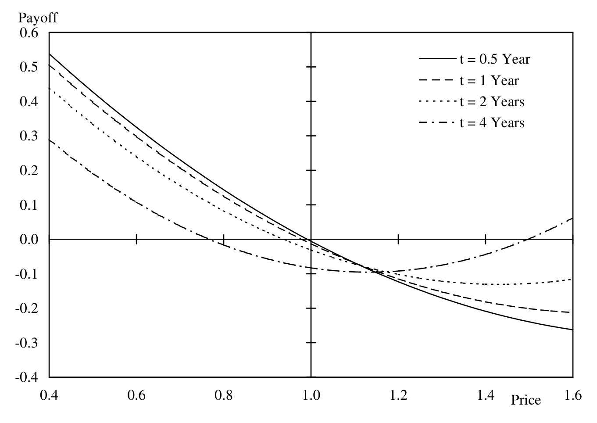
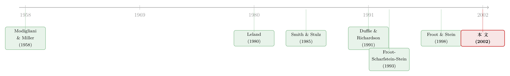

对冲的下半场：不是「要不要」，而是「怎么对冲」
本文读的是 Brown & Toft (2002, Review of Financial Studies)：当一家公司同时面对「可对冲的价格风险」和「不可对冲的数量风险」、又在坏状态下要付出死重成本时，作者用闭式解告诉你它到底该买远期、买期权、还是去定制一份「奇异」合约——答案的关键，藏在价格与产量的相关系数，以及数量风险相对价格风险的大小里。
1 引言：一个被问了二十年、却始终没人回答的问题
打开任何一本公司金融的教科书，关于「企业为什么要对冲」的论述都汗牛充栋。从 Modigliani 和 Miller (1958) 的无关性定理出发，人们发现：只要 MM 的假设被打破——凸的税收表、破产的死重成本、代理成本、外部融资的高昂——对冲就能凭空给股东创造价值。Smith 和 Stulz (1985) 把这套逻辑讲得最清楚：一个价值最大化的公司，只要面对凸的税收或者财务困境的死重成本，就应该对冲。
可是，如果你已经下定决心要对冲，下一个问题马上就来了：到底该怎么对冲？
令人意外的是，这个「怎么」几乎无人作答。文献从没认真讨论过：一家公司什么时候该用远期、什么时候该用期权、又或者干脆都不用，而是去和场外衍生品交易商签一份量身定制的合约？Brown 和 Toft 这篇 2002 年发表在 RFS 上的论文，正是冲着这个空白去的。他们的野心不是再添一条「为什么对冲」的理由，而是把那些理由统统当作既定前提，然后一路推到底——求出那个价值最大化公司的最优对冲策略。
2 把问题逼到最简：两种风险，一种成本
要回答「怎么对冲」，先得把公司抽象到不能再简单。作者给了两个生动的例子。
一个是种小麦的农民：小麦的价格可以用期货、期权轻松对冲，但他今年到底能收多少蒲式耳——这个产量，却没法事先锁定。另一个是在本土生产、卖到海外的电脑厂商：以外币计价的销售额，短期内不难预测和对冲，可放到长期，海外究竟能卖出多少，谁也说不准。
于是两类风险被清清楚楚地分开了：
- 可对冲的价格风险 (hedgeable price risk)：输出品价格 \(p\)，市场上有衍生品可以交易；
- 不可对冲的数量风险 (unhedgeable quantity risk)：产量 \(q\)，没有任何金融工具能直接锁定它。
这正是这篇论文区别于「投资组合选择」那一支文献的地方。以往的模型（如 Svensson & Werner (1993)）处理的是一个可加的、相关的非交易收入；而这里，价格和数量是相乘的（收入 = \(p\times q\)）。这种乘性的数量风险，才真正刻画了一家实体企业的处境，也让解变得与既有文献迥然不同。
接着，一个自然的问题是：光有两类风险还不够，公司凭什么要花钱对冲？答案是第三块积木——死重成本 (deadweight costs)。作者假设公司在某些「坏状态」（利润低的时候）会承担额外的成本：直接和间接的破产成本、外部融资的代价、凸的税收表、代理成本……这些都被打包成一个只依赖于公司净利润 \(P\) 的函数 \(C(P)\)。
作者特别强调：这两个假设——代价高昂的坏状态和不可对冲的风险——是得到非平凡对冲策略的「最低配置」。没有死重成本，公司根本没理由对冲；没有不可对冲的风险，最优策略不过是把全部敞口卖成远期、得到一个完美对冲，索然无味。正是「数量风险锁不住」这一条，让对冲策略一下子变得丰富起来。
3 模型：把「怎么对冲」写成一道最优化
有了三块积木，模型就呼之欲出了。设一家生产单一商品的公司，在未来 \(t=1\) 实现不确定的产量 \(q\) 和价格 \(p\)。经营利润是产量乘价格再减去成本：
$$f(p,q) = pq - s_1 q - s_2,\qquad s_1, s_2 \in \mathbb{R}_{+}$$
这里 \(s_1\) 是每单位的变动成本，\(s_2\) 是固定成本。作者假设 \((p,q)\) 服从二元正态分布，相关系数为 \(\rho\)，期望分别是 \(\mu_p, \mu_q\)，标准差分别是 \(\sigma_p, \sigma_q\)。
死重成本则取一个指数形式：
$$C(P) = c_1\, e^{-c_2 P},\qquad c_1, c_2 \in \mathbb{R}_{++}$$
这个函数的妙处在于：利润 \(P\) 低（坏状态）时成本高、利润高（好状态）时成本低，而且处处满足 \(C_{PP}(P) > 0\)（凸性）。参数 \(c_1\) 控制死重成本的整体水平，\(c_2\) 控制它的斜率与曲率——\(c_2\) 越大，坏状态相对于好状态的成本就越触目惊心。
公司能做的，是在 \(t=0\) 签一份在 \(t=1\) 支付 \(x(p,a)\) 的合约，\(a\) 是合约参数（远期张数、执行价等）。在无风险利率为零的设定下，这份合约今天的公允成本是 \(X(a) = \int_p x(p,a)\, g^*(p)\, dp\)，其中 \(g^*(p)\) 是 \(p\) 的风险中性定价密度。公司的净利润（扣死重成本前）就是
$$P(p,q,a) = f(p,q) + x(p,a) - X(a)$$
于是，整个「怎么对冲」的问题，被压缩成了一道干净的最优化：
如果 \(\partial^2\Pi/\partial a\,\partial a'\) 负半定，价值最大化就等价于求解一阶条件。而当 \(p\) 的边际密度 \(g(p)\) 恰好等于风险中性密度 \(g^*(p)\) 时（即公司不带任何对未来价格的「观点」），一阶条件可以漂亮地简化为：
$$\int\!\!\int -\frac{\partial C(P)}{\partial P}\,\frac{\partial P(p,q,a)}{\partial a}\, h(p,q)\,dq\,dp = 0$$
这个式子的直觉极其重要：公司在权衡每多签一份合约带来的边际收益时，用死重成本的边际值 \(-\partial C/\partial P\) 作为权重去加权。换句话说，对冲不是为了把方差压到最小，而是为了把钱「搬」到死重成本最咬人的那些坏状态里去。这一点，正是后面所有反直觉结论的源头。
4 香草对冲：为什么有时该「少对冲」
先从最朴素的工具说起——远期。线性收益的远期合约 \(x(p,a) = a(p-\mu_p)\) 是现实中最主流的风险管理工具（Hentschel & Kothari (2001) 的样本里，远期和互换占了一家公司衍生品头寸的约 90%）。\(a\) 是买入的远期张数，\(a<0\) 就是卖出。这份合约今天的成本 \(X(a)=0\)。
把它代入一阶条件，作者得到了最优远期张数的闭式解：
$$a^* = -\mu_q \;-\; \rho\,\frac{\sigma_q}{\sigma_p}\,(\mu_p - s_1) \;+\; c_1\,\sigma_q^2\,(1-\rho^2)\,(\mu_p - s_1)$$
这个式子值得逐项品味：
- 第一项 \(-\mu_q\)：如果产量是确定的，公司就该把全部预期产量卖成远期——这正是教科书里的「完美对冲」。
- 第二项 \(-\rho\,(\sigma_q/\sigma_p)(\mu_p-s_1)\)：相关性的修正。当价格与产量负相关（\(\rho<0\)，丰收压价、歉收提价，本身就是一道天然对冲）时，这一项变为正，会抵消一部分卖出头寸。于是结论反直觉地出现了：价格与产量负相关时，公司典型地应该对冲得比预期敞口更少。
- 第三项：注意那个 \((1-\rho^2)\)——它正是把 \(q\) 投影到 \(p\) 之后残余的、真正不可对冲的那部分方差。这一项随死重成本水平 \(c_1\) 放大，刻画了公司为坏状态额外加码的动机。
作者还顺手证明了一件让人心服口服的事：教科书里大名鼎鼎的最小方差对冲 (minimum-variance hedge)，不过是他们模型的一个特例；而且由于最小方差对冲无视了生产技术、也无视了公司对冲的根本理由，它带来的死重成本总是不低于这个最优对冲。换句话说，盯着方差最小，往往不是在替股东省钱。
这里藏着一个微妙但要命的区分：在完全市场下，一个面临坏状态死重成本的公司会把风险资产敞口完全对冲掉；而一个风险厌恶的投资者却会出于投机目的保留一部分敞口。Froot 和 Stein (1998) 指出过这个区别，Brown 和 Khokher (2001) 做了细致考察——别把公司的对冲问题，错当成个人的组合选择问题。
5 真正关键的一步：定制一份「奇异」合约
远期只是热身。这篇论文最重要的贡献，是把对冲工具的空间彻底放开——不再限定远期或期权，而是问：在所有公允定价的合约里，那个最优的收益函数 \(x(p)\) 长什么样？
作者把这个最优解称为奇异衍生品 (exotic derivative)，因为它通常无法用远期加有限个香草期权复制出来。而它与最优远期之间，存在一种极其优雅的关系：
在标的商品的远期价格处，最优远期合约与最优定制合约拥有完全相同的「delta」；而在偏离远期价格的地方，奇异合约通过增加（或减少）凸性来对公司的敞口做精细微调。
这句话值得反复咀嚼。它告诉你：最优定制对冲并不是把远期推翻重来，而是以最优远期为切线，再在两翼按需弯曲。弯向哪边、弯多大，全看公司在那些价格区间里的死重成本有多陡。下图就画出了负相关情形下，这条最优奇异收益曲线的样子。

Figure 5: shows optimal exotic hedges for the negative correlation case
那么，公司该往哪个方向弯？作者给出了一条干净的判据：
- 当 \(\rho < 0\)（价格与产量负相关）时，公司典型地应该「买入凸性」——也就是买期权。一个直观的特例是：负相关时，买入看跌期权往往优于卖出远期。
- 当 \(\rho > 0\)（正相关）时，最优定制对冲通常（但并非总是）要求公司「卖出凸性」。
- 凸性的具体程度，由价格风险和数量风险共同决定，死重成本函数的相对凸性只起次要作用。一条经验规律是：数量风险越大，最优对冲里的「期权性 (optionality)」就越强。
6 谁最该掏钱买这份奇异合约？
因为解是闭式的，作者得以反过来回答一个对实务极有价值的问题：哪类公司从非线性的奇异对冲里获益最多？
答案落在三个量上：价格与产量的相关性、价格与数量的波动幅度、以及这两种风险的比值。具体而言：
- 当相关性为负、且数量风险很大时，公司从奇异收益里获益最多——这时远期和期权都不够用。
- 当相关性可以忽略（\(\rho\approx 0\)）时，远期合约就已经非常有效了，定制合约的额外价值有限。
- 当相关性为正时，奇异衍生品相对远期或期权仍有额外收益，而且这份收益随数量风险增大、价格风险减小而增加。
一个值得记下的量级感：在作者的基准参数下（价格和数量波动率各 20%、\(\rho=-0.5\)、\(\mu_p=\mu_q=1\)、\(s_1=0.25\)、\(s_2=0.4\)），若完全不对冲，\(c_2\in\{2,5,8\}\) 分别对应约 \(\{1.3\%, 2.9\%, 4.2\%\}\) 的预期死重成本——注意这是占预期收入而非利润的比例。对一家有 $\$1$ 十亿海外销售的公司，这意味着 $\$13$ 百万到 $\$42$ 百万的真金白银。对冲设计得好不好，差的就是这个数。
（关于现实中公司到底用衍生品对冲掉了多大比例的风险——答案小得令人尴尬——可参见《公司到底用衍生品对冲了多少风险？》。把那篇的实证窘境，和这篇的规范处方对照着读，别有意味。）
7 文献脉络：从「为什么」到「怎么」
把这篇论文放进它所在的脉络里，故事就更清楚了。
最上游是 Modigliani 和 Miller (1958)——在他们的世界里，对冲与公司价值无关。整条「为什么对冲」的研究，本质上都是在罗列 MM 假设被打破的各种方式：Smith 和 Stulz (1985) 给出凸税收与困境成本；Stulz (1984)、DeMarzo 和 Duffie (1991, 1995)、Breeden 和 Viswanathan (1996) 从经理激励与信息不对称切入；Froot、Scharfstein 和 Stein (1993) 则把对冲与「代价高昂的外部融资」连起来，Froot 和 Stein (1998) 进一步把它整合进金融机构的资本预算框架。
而「怎么对冲」这一支，其实早有另外几条暗流：Leland (1980)、Brennan 和 Solanki (1981)、以及 Carr、Jin 和 Madan (2001) 研究的是投资者在给定偏好与信念下的最优收益函数；Duffie 和 Richardson (1991) 在连续时间里求解了用相关期货对冲非交易敞口的动态策略；而农业经济学那一支——Rolfo (1980)、Moschini 和 Lapan (1995)——早就在啃「不确定产量」下的最优期货/期权对冲。

Brown 和 Toft (2002) 的位置，恰好是把这两条线接上：他们承接了「为什么对冲」积累下来的死重成本动机，又借鉴了「最优收益函数」的求解思路，第一次系统地为一个带不可对冲数量风险的、价值最大化的非金融企业，给出了从远期到奇异合约的完整、闭式的对冲处方。
8 评论与延伸（Q&A + 研究方向）
(a) 几个可能的疑问
Q：最小方差对冲不是风险管理的标准答案吗，为什么这里说它「次优」？
因为最小方差对冲只盯着终端财富的方差，而完全无视公司对冲的理由——死重成本只在某些坏状态里咬人，且咬的力度（\(C_{PP}>0\)）随利润非线性变化。最优对冲是用死重成本的边际值去加权敞口，把保护精准地堆到坏状态。作者证明了，正因为最小方差对冲丢掉了生产技术与成本结构这些信息，它带来的死重成本总是不低于最优对冲。
Q：「负相关时该少对冲、甚至买看跌期权」，这个反直觉结论从哪来？
关键在于价格和产量是相乘的。当 \(\rho<0\)，价格本身就是产量的天然对冲（歉收时价格上涨补回一部分收入），所以公司不必、也不应把全部预期产量卖成远期——这就是 \(a^*\) 公式里那个正的 \(-\rho(\sigma_q/\sigma_p)(\mu_p-s_1)\) 项。进一步，看跌期权只在价格下跌（往往伴随坏状态）时提供保护，比对称的远期更贴合死重成本的非对称结构。
Q：这和投资者的最优组合选择问题（如 Svensson & Werner）有何本质不同？
两点。第一，那一支解的是单个（或代表性）投资者的效用最大化，而这里是价值最大化的公司——完全市场下公司会把敞口对冲到底，投资者却会出于投机保留敞口。第二，那一支处理的是可加的相关非交易收入，这里是乘性的数量风险（收入 \(=p\times q\)），后者才是实体企业的真实处境，解的形态也因此不同。
Q：「奇异合约的 delta 在远期价格处等于最优远期」这件事，为什么重要？
它给了实务一个极简的落地路径：先按闭式解算出最优远期张数，把它当作切线斜率；再根据相关性符号和数量风险，决定在两翼「买」还是「卖」凸性。换句话说，复杂的定制合约可以被分解成「一个你已经会算的远期 + 一层凸性修正」，而不必从零设计一条曲线。
Q：结论对「二元正态」这个分布假设有多敏感？
作者明确表示，他们的结论对具体的分布假设相对不敏感。正态只是为了得到漂亮的闭式解；定性的处方（负相关买凸性、数量风险大加期权性）依赖的是相关性结构和死重成本的凸性，而非正态尾部本身。
Q：模型把投资、资本结构都当作既定，这个简化会不会太强？
这是作者自觉的取舍。他们把模型定位为「下一期的最优对冲」：工厂已建、研发已投、资本结构已定，这些既昂贵又费时调整的变量在短期内锁死，恰恰是死重成本的来源之一。长期里它们当然与对冲政策联合决定，但把它们固定下来，才能干净地聚焦「短期该怎么对冲」这一问。
(b) 几个可能的研究问题与提案
1. 把这套处方搬到公司债与信用风险上。 【经济故事】这篇的死重成本是个抽象函数，而违约本身就是最典型的「坏状态死重成本」。如果把 \(C(P)\) 显式地由公司资本结构与违约边界生成（呼应《公司随时都可能倒下，期权定价却只盯着还债那一天》的障碍期权思路），就能内生地推出「高杠杆公司该买多少凸性」。 【可行性】中。理论端 doable，需把结构化信用模型与本文的最优收益函数嫁接；实证检验需要公司层面的衍生品头寸与杠杆数据，识别上较难。
2. 外资持有人的「货币 + 数量」联合对冲。 【经济故事】跨国投资者持有的外国公司债，同时暴露在汇率（可对冲）与发行人基本面/赎回（不可对冲的「数量」）之下，正是本文「乘性风险」的现实翻版。 【可行性】中。需要持仓层面的外资数据与货币衍生品使用记录；机制清楚，但「数量风险」的代理变量难找。
3. 危机期间公司债流动性当作不可对冲的数量风险。 【经济故事】把「能不能按需卖出债券」看成一种数量风险，本文框架预测：当价格风险与流动性数量风险负相关、且后者很大时，机构应「买入凸性」（如流动性期权、信用违约互换的非线性头寸）。 【可行性】中。可借 2020 年公司债流动性危机的自然实验（参见《差点死掉的那个市场》），数据可得，但把流动性映射成「数量」需要谨慎建模。
4. 用机器学习从交易商报价里反推「最优奇异收益」。 【经济故事】本文给出的是闭式最优收益函数；现实中场外交易商提供的结构化产品，是否在向这条曲线靠拢？可以把观测到的定制合约收益结构与模型预测对比，量出「实务与最优的差距」。 【可行性】低到中。结构化产品的逐笔条款数据极难获取，识别「公司面对的 \(\rho\) 与 \(\sigma_q/\sigma_p\)」也充满噪声。
9 我的判断
这篇论文的贡献，在于把一个被问了二十年却始终悬空的「怎么」问题，第一次给出了闭式、可操作、且直觉清晰的答案。它最漂亮的地方不是某个公式，而是那句「在远期价格处 delta 相等、两翼增减凸性」——它把一个原本无穷维的合约设计问题，降维成了「远期 + 凸性修正」两个旋钮，并用相关性符号和数量/价格风险比值，告诉你每个旋钮往哪拧。对实务而言，这比任何一个关于「为什么对冲」的定理都更有用。
担忧也是有的，而且主要不在「识别」（这是一篇规范性的理论文，不靠因果识别），而在前提的可观测性。整套处方的输入——价格与产量的相关系数 \(\rho\)、数量波动率 \(\sigma_q\)、以及死重成本函数的形状 \((c_1,c_2)\)——在现实中都极难估准，尤其是「不可对冲的数量风险」本身就因为不可交易而缺乏市场价格作为锚。模型说数量风险越大越该买凸性，可恰恰是数量风险最大的公司，最难知道自己的 \(\sigma_q\) 到底是多少。此外，把投资与资本结构外生固定，虽是合理的短期近似，却也回避了「对冲反过来改变最优杠杆」这层反馈。
我接下来最想看到的，是把这套闭式处方与真实的衍生品头寸数据对账：实务中的公司，究竟是在「负相关时买凸性」，还是被最小方差对冲的直觉带偏了？以及，那些为非金融企业定制奇异合约的交易商，给出的曲线离这条理论最优有多远——那个差距里，藏着风险管理这门手艺真正的水位线。
参考文献
- Brown, G. W., and K. B. Toft (2002). How Firms Should Hedge. Review of Financial Studies 15(4), 1283–1324.
- Brennan, M., and R. Solanki (1981). Optimal Portfolio Insurance. Journal of Financial and Quantitative Analysis 16, 279–300.
- Carr, P., X. Jin, and D. Madan (2001). Optimal Investment in Derivative Securities. Finance and Stochastics 5, 33–59.
- Duffie, D., and H. Richardson (1991). Mean-Variance Hedging in Continuous Time. Annals of Applied Probability 1, 1–15.
- Froot, K., D. Scharfstein, and J. Stein (1993). Risk Management: Coordinating Corporate Investment and Financing Policies. Journal of Finance 48, 1629–1658.
- Froot, K., and J. Stein (1998). Risk Management, Capital Budgeting and Capital Structure Policy for Financial Institutions: An Integrated Approach. Journal of Financial Economics 47, 55–82.
- Hentschel, L., and S. P. Kothari (2001). Are Corporations Reducing or Taking Risks with Derivatives? Journal of Financial and Quantitative Analysis 36, 93–118.
- Leland, H. (1980). Who Should Buy Portfolio Insurance? Journal of Finance 35, 581–594.
- Modigliani, F., and M. Miller (1958). The Cost of Capital, Corporate Finance, and the Theory of Investment. American Economic Review 48, 261–297.
- Moschini, G., and H. Lapan (1995). The Hedging Role of Options and Futures Under Joint Price, Basis, and Production Risk. International Economic Review 36, 1025–1049.
- Rolfo, J. (1980). Optimal Hedging Under Price and Quantity Uncertainty: The Case of a Cocoa Producer. Journal of Political Economy 88, 100–116.
- Smith, C., and R. Stulz (1985). The Determinants of Firms' Hedging Policies. Journal of Financial and Quantitative Analysis 20, 391–402.
- Stulz, R. (1984). Optimal Hedging Policies. Journal of Financial and Quantitative Analysis 19, 127–140.
- Svensson, L., and I. Werner (1993). Nontraded Assets in Incomplete Markets: Pricing and Portfolio Choice. European Economic Review 37, 1149–1168.